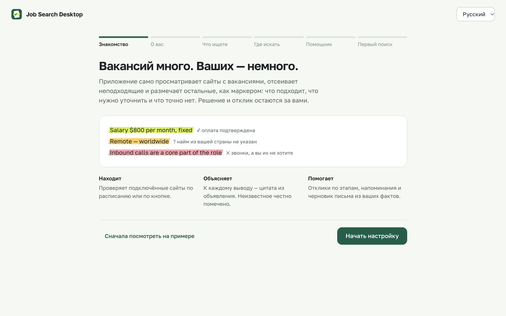
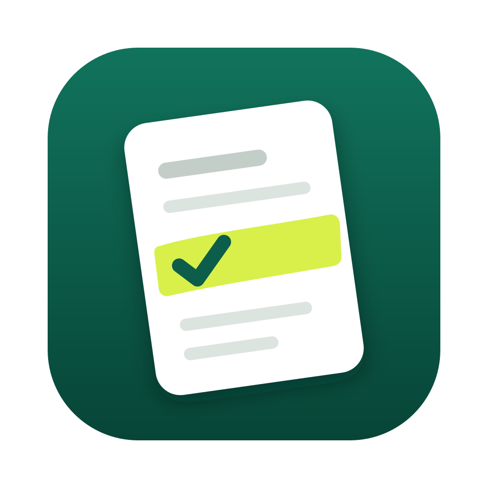

Вакансий много. Ваших — немного.
Бесплатное приложение для macOS и Windows. Оно само просматривает сайты с вакансиями, отсеивает неподходящие и размечает остальные, как маркером: что подходит, что уточнить и что точно нет — у каждой пометки есть цитата из объявления. Решение и отклик остаются за вами.
Все файлы и версии. Бесплатно, открытый код (MIT). Данные остаются на вашем компьютере.
Junior Data Annotator
Northwind Labs (пример) — удалённо
Entry level role, training provided. You will label images and short texts for our AI models.
Salary $800 per month, fixed, paid monthly.
Remote — worldwide. English B2 (written).
Inbound calls are part of the role.
- ✓Оплата подтверждена: $800/мес ≥ ваших $600
- ?«Worldwide» не доказывает найм из вашей страны — уточнить у работодателя
- ✕Звонки обязательны, а вы их не хотите
За минуту: как это работает
В ролике только то, что уже есть в приложении. Экраны — из приложения с примером данных.
От скачивания до первого результата
-
Установите и откройте
На Mac перетащите приложение в «Программы», на Windows запустите установщик. Сборки пока не подписаны, поэтому система один раз предупредит: на Mac откройте «Системные настройки», раздел «Конфиденциальность и безопасность», и нажмите «Всё равно открыть»; на Windows нажмите «Подробнее», затем «Выполнить в любом случае».

-
Расскажите, что ищете
Где вы живёте, какие языки знаете, какая работа интересна, минимальная оплата, без звонков. На каждом шаге объяснено, зачем это нужно; необязательное можно пропустить.
-
Нажмите «Найти вакансии»
Видно, как читается каждый сайт: ждёт, читает, готово. Если сайт не ответил, это видно — приложение не делает вид, что вакансий нет.
-
Прочитайте пометки и действуйте
Откройте вакансию: у каждого условия — вердикт, причина и цитата. Сохраните её или нажмите «Готовлю отклик» — появятся чек-лист и черновик письма. Отправляете вы на сайте работодателя.
Что вы получаете
- Пометки с доказательствами
- Оплата, страна найма, опыт, язык, звонки, часы и формат — у каждой пометки цитата из объявления.
- Честное «неизвестно»
- «До», оценки площадок и почасовая ставка без гарантированных часов не считаются подтверждённой оплатой. «Worldwide» не считается наймом из вашей страны.
- Отклики по этапам
- Сохранено, готовлю, отправлено, ответ, интервью, оффер — с напоминаниями и чек-листом. Открытие сайта не считается откликом.
- Документы из ваших фактов
- Черновики резюме и писем — только из подтверждённого вами. Если работодатель запрещает AI-ответы, генерация для этой вакансии отключается.
- Поиск по расписанию
- Каждый день или неделю в вашем часовом поясе. Система запускает поиск, даже когда приложение закрыто; с сервером поиска — и когда компьютер выключен, а результаты ждут вас при возвращении.
- Ваши инструкции
- Своими словами: какие площадки пропускать, какие страны и языки рассматривать, чего избегать. Применяется в каждом поиске, и видно, как приложение это поняло.
- Данные остаются у вас
- Всё хранится на вашем компьютере. Экспорт, резервная копия и импорт встроены.
Локальный помощник — установка одной кнопкой
Помощник читает объявление и выписывает требования с цитатами. Он работает на вашем компьютере через Ollama — бесплатный движок с открытым кодом. Приложение само его установит, скачает выбранную модель и проверит, что она работает. Ни ваши данные, ни вакансии в интернет не уходят.
Помощник необязателен: поиск, пометки и отклики работают и без него.
gemma4:12bgemma4:12b-mlxВсе четыре модели доступны в «Настройках → AI» и при первом запуске. Выберите и установите нужную: веса скачиваются отдельно и не входят в установщик. Уже установленные модели приложение распознаёт само.
Размеры — из официального реестра Ollama; приложение покажет их перед скачиванием и подскажет, что подходит вашему компьютеру.
Вопросы
Приложение откликается за меня?
Нет. Оно находит, проверяет и объясняет вакансии, готовит чек-лист и черновик письма. Откликаетесь вы сами на сайте работодателя.
Какие сайты оно проверяет?
Himalayas, The Muse, Arbeitnow, Jobicy, Remotive, Remote OK, Working Nomads, We Work Remotely, Хабр Карьера и открытые страницы компаний на Greenhouse, Lever и Ashby — с поиском по вашим направлениям, а не только по свежим объявлениям. hh.ru и Adzuna (19 стран) подключаются с вашим доступом. Какие сайты использовать, выбираете вы; правила и лимиты каждого сайта соблюдаются.
Ищет ли оно, когда компьютер выключен?
Когда приложение закрыто, поиск по расписанию запускает система; если компьютер спал — один раз после пробуждения. Чтобы поиск шёл при выключенном компьютере, подключите в настройках сервер поиска (свой можно развернуть по инструкции в репозитории): он выполняет ваше расписание в вашем часовом поясе, а приложение забирает результаты, когда вы его откроете.
Это гарантирует, что я найду работу?
Никакое приложение не может это обещать. Оно экономит время на чтении и сортировке и честно показывает неизвестное — чтобы силы уходили туда, где есть смысл.
Нужна ли подписка на нейросеть?
Нет. Можно установить бесплатную локальную модель прямо в приложении или обойтись без AI. Если хотите облачную модель — добавьте свой API-ключ в настройках.
Какой нужен компьютер?
Mac с Apple Silicon (M1 и новее) на macOS 13+ или Windows 10/11 64-бит. Самому приложению нужно около 300 МБ; модели скачиваются отдельно (около 4,6–9,5 ГБ). Для E2B нужно от 8 ГБ памяти, для E4B — от 16 ГБ. Для 12B ориентируйтесь на 16 ГБ оперативной/объединённой памяти или видеопамяти и больше; скорость зависит от компьютера. MLX — только для Apple Silicon, обычная 12B работает и на Windows.
Почему macOS или Windows предупреждает?
Сборки пока не подписаны платным сертификатом разработчика. На Mac попробуйте открыть приложение, затем зайдите в «Системные настройки», раздел «Конфиденциальность и безопасность», и нажмите «Всё равно открыть». На Windows нажмите «Подробнее», затем «Выполнить в любом случае». Исходный код открыт на GitHub.
Где хранятся мои данные?
В папке пользователя на этом компьютере. Ключи — в системном хранилище паролей. Всё можно выгрузить в файл в любой момент.
